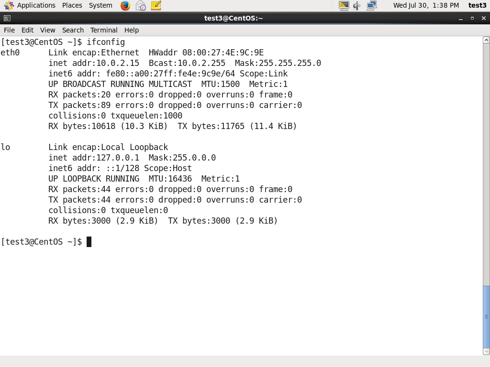
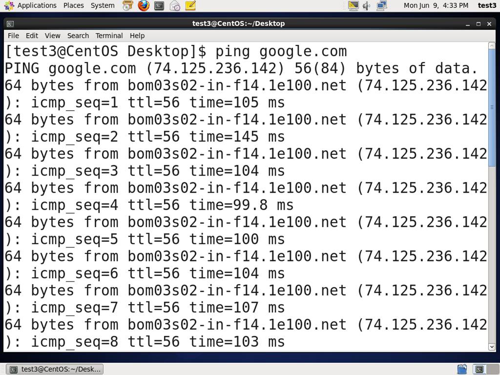
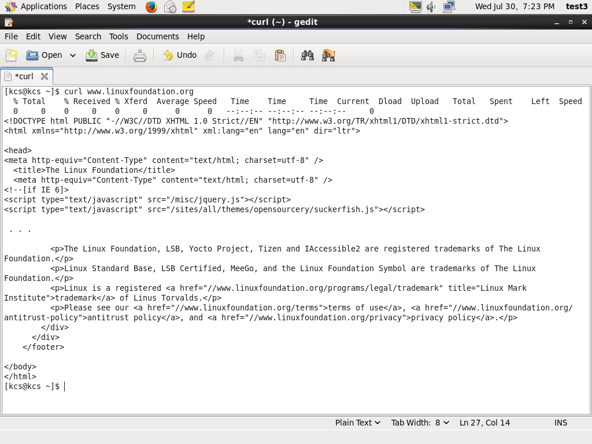

Introduction
النهاردة هانتكلم عن موضوع ممتع جدا و كلكم هاتحبوه وهو الشبكات
هانتكلم مع بعض عن بعض مبادىء الشبكات و ازاى تتعامل مع الشبكات فى نظام لينكس
من خلال اشهر اللاوامر اللى فى النظام للتعامل مع الشبكات او عن طريق ال GUI
مش محتاج تكون دارس شبكات عشان تفهم معانا الدرس ده :D
Chapter 1 : Introduction to networking
اول حاجة خلينا نعرف يعنى ايه شبكات
هى ببساطة اى مجموعة عناصر مرتبطة ببعض
يعنى ايه عناصر ديه؟
يعنى ممكن تكون مجموعة من الاجهزة المنزلية او الشخصية .. مجموعة سيرفرات مجموعة printers
كل الاجهزة ديه لو مربوطة ببعض و بتبعت معلومات لبعضها البعض عن طريق خطوط اتصال
سواء كانت خطوط الاتصال ديه سلك او wirless .. كل دول اسمهم شبكه
طيب هنا نيجى لسؤال مهم .. لو عايز اعمل اتوصل بشبكة من الاجهزة هل لازم يكونوا معايا فى نفس المكان ؟
لا ممكن مجموعة الاجهزة ديه تكون معايا فى نفس المكان او فى اى مكان تانى فى العالم كله و اتوصل معاها عن طريق الانترنت
عشان كده معظم الشركات العالمية بتحتاج للنوعين دول من الشبكات سواء كانت فى نفس المكان يعنى لو عايز اوصل مجموعة الاجهزة اللى فى الشركة ببعض او اوصلهم بطابعة
او انى اوصل الاجهزة كلها بال server اللى موجود فى قارة تانية و زى ما قولنا عن طريق النت
عشان كده بيسموا النت هو شبكة الشبكات كلها .. لان الانترنت هو ببساطة شبكة برضة
IP Address
يعنى ايه المصطلح ده ؟
دلوقتى لو انا موجود على شبكة فى الشركة اللى شغال فيها و واحد زميلى محتاج يبعتلى ملفات بدل باه ما ادور على فلاشة انا اقولوه ابعتهالى على الشبكة
طيب دلوقتى الشركة فيها اجهزة كتيرة اوى هاتعرفنى منين ؟
هنا باه يظهر ال IP (Internet Protocol) العنوان بتاع الجهاز بتاعى على الشبكة عشان تقدر المعلومات توصلى
طيب ماشى الشبكة يا عم عارفة عنوانك ايه هاتعرف منين اصلا ان المعلومات اللى موجودة ديه رايحالك انت مش للى جنبك
اقولك ان لما يبدا جهاز يبعت ملفات عن طريق الشبكة فا المعلومات ديه بتتحط فى صندوق او بمصطلح اخر package
الصندوق ده عليه من برة شوية معلومات كده و من جوة شايل الملفات اللى محتاجها
المعلومات اللى على الصندوق هى ان حجم الملفات ديه قد ايه و جاية منين و عايز اوديها لمين
و الشبكة هنا بتقوم بدور ساعى البريد اللى كل دوره ان ياخد الصندوق و يقرا العنوان و يخبط عليه و يقولى ليك طرد و انا عليه انى اقبلة او ارفضة

IPv4 and IPv6
طيب دلوقتى العنوان اللى انا باخده ده هل ممكن يكون حد تانى موجود معايا على الشبكة ليه نفس ال IP
اقولك لا .. لان طريقة توزيع العنوان لكل جهاز ماشية حسب قواعد معينة او طريقة معينة فى كتابة ال IP
و القاعدتين المشهورين هما IPv4 و IPv6
ال IPv4 هو اقدم من التانى بس هو اللى بنستخدمة تقريبا كلنا دلوقتى و شائع
و كمان ال IPv4 بيستخدم طريقة فى وضع ال 32 bit address يعنى بيتيح ليك 4.3 مليار عنوان للشبكة
و فيه عنوايين كتير مش مستخدمة منها و عشان هى كبيرة كده تقريبا هى المستخدمة دلوقتى للشبكة العالمية او الانترنت يعنى
فى حين ان ال IPv6 بتستخدم طريقة 128 bit address يعنى و ده بيتيح ليك 3.4*10^38
يعنى لو عايز توسع الشبكة اللى شغال عليها و ال IPv4 مش مكفيك تقدر تستخدم IPv6
بس وقتها انت محتاج تظبط الاجهزة اللى بتوصلك الشبكة ببعض انها تشتغل على طريقة العناويين الجديدة IPv6
دلوقتى خلونا نشرح شوية عن طريقة ال IPv4
العنوان هنا بيتقسم لاربع اقسام كل قسم منهم عبارة عن 8 bit
زى فى المثال ده
IP Address ---> 172 . 16 . 31 . 46
Bit format ---> 10101100 . 00010000 . 00011111 . 00101110
IP address allocating
طيب هنا باه نوصل لنقطة مهمة .. هو العنوان اللى انا بتعامل بيه بالجهاز بتاعى على الشبكة لو اخدت الجهاز ووصلتة لشبكة تانية هايبقى نفس العنوان
الجواب لا .. انت العنوان بتاعك بتطلبة من الشبكة .. طيب بطلبة من مين
بيتطلب من ال Internet service provider (ISP) عن طريق ال network administrator بتاع الشبكة ديه
و اقدر كمان بعد كده انى اغير ال IP ده للشبكة ديه او انى اخلية ثابت على الشبكة ديه
لما بضيف ال IP بايدى باخلية static ثابت ليه للشبكة ديه ماحدش تانى ياخده و عمره ماهيتغير
بس لو خليتة dynamic يباه لو قفلت الجهاز بتاعى و فتحتة تانى هلاقية اتغير معايا و ده عن طريق Dynamic Host Configuration Protocol (DHCP)
Name Resolution
خلونى احكى قصة صغيرة .. طبعا احنا قلنا ان النت عبارة عن شبكة فى الاساس و جميع الاجهزة المرتبطة فيها طبعا ليها IP حتى ال server اللى بيجيبلك موقع معين عايز تستخدمه
زمان اول مابدأوا يستخدموا النت كانوا عشان يوصلوا لموقع معين كانوا يكتوبوا العنوان بتاعه بايديهم و لازم يحفظوه عشان كل مره عايزينة
عشان كده كل مره عايز اوصل لموقع معين اكتب 140.211.169.4 و طبعا بعد العدد المهول من المواقع باه صعب نحفظهم كلهم
المسئوليين قالوا خلاص احنا ندى لكل موقع اسم معين بطريقة معينة .. لو عايز توصل للموقع لازم تكتب اسمه بالطريقة ديه
و الاسم ده احنا مخزنينة عندنا نشوف مين صاحب الموقع ده و نجيب ال IP بتاعة و نروح نجيبلك الموقع بال IP بدل ماتكتبة بنفسك
و الاسم ده بعد كده سموه host name
و ال name resolution هو السئول انه يحول ال IP لاسم الموقع عشان تقدر تستخدمة بعد كده
اما ال DNS (Domain Name Server) هو المسئول انه يحول الاسم بتاع الموقع الى IP
لو عايز تشوف بعض الادوات اللى بتستخدم ال DNS او ال Name resolution من هنا
Network Interfaces
network interface هو قناة الاتصال بين الجهاز بتاعى و الشبكة المتصل بيها
و ال interface موجود منه نوعين واحد مادى زى كارت ال NIC (Network Interface Card) او كا برنامج
و بكدة ممكن يكون عندك اكتر من interface
و عشان اعرف ال interfaces اللى موجودة عندى اكتب الامر ifconfig و اللى ممكن تحتاج انك تكون superuser عشان تستحدمة
Network Configuration Files
هى الملفات اللى فيها ال functionlaity بتاعت ال network زى ال network interface
و الملفات اللى فى Debian بتكون موجودة فى /etc/network/interfaces. و ممكن كمان اكتب /etc/init.d/networking start عشان ابدا اعرف الشبكة بتاعتى
اما فى fedora موجودة فى /etc/sysconfig/network. و ال network interface موجود فى /etc/sysconfig/network-scripts/ifcfg-eth0.
و فى suse موجودة فى /etc/sysconfig/network و ممكن كمان اكتب الامر /etc/init.d/network start عشان ابدا اعرف الشبكة بتاعتى على fedora و suse
Network configuration Commands
علشان اعرف ال IP Address اكتب الامر
$ /sbin/ip addr show
و عشان اعرف معلومات عن ال routing هاكتب الامر
$ /sbin/ip route show
ping
هو امر مشهور اوى عشان اعرف اذا كان الجهاز اللى شغال عليه متوصل بالنت و لا لا عن طريق انى بكتب الامر و بعدها اديلة اسم موقع معين
لو فيه نت هايبعت للموقع ده طلب و الموقع هايرد عليه بطلب و طالما فيه معلومات ماشية يباه اكيد فيه شبكة و نت
route
دلوقتى عشان ابعت معلومات عن طريق الشبكة فا المعلومات ديه بتعدى على مجموعة servers و routers
كل server موجود عليه جدول بال IP اللى هايتعامل معاها فى الشبكة و ال IP Routing Protocols هى اللى بتملى الجداول ديه
و ال route هو المسئول عشان اعرض او اغير فى الجداول ديه .. ساعات بتحتاج تشيل IP او اضيف واحد او اخلى واحد static و كل ده اقدر انفذه بالاوامر ديه
- $ route –n : بتظهرلى الجدول الموجود دلوقتى
- $ route add -net address : لو عايز اضيف route جديد و نوعة static
- $ route del -net address : عشان امسح route نوعة static
traceroute
هو امر بيستخدم عشان افحص المعلومات اللى ببعتها لموقع معين و ده بيساعد فى معرفة لو حصل مشكلة فى حصلت فى وقت الاتصال

More network tools
دلوقتى هانشوف مجموعة من الاوامر المفيدة فى الشبكات
- ethtool : بتعرف ال interfaces الموجودة و بتعرض بعض المعلومات عن سرعة التوصيل فى الشبكة
- netstat : بتعرض كل الاجهزة المتوصلة و كمان بتعرض جداول ال routing و ده بيفيد فى حل المشاكل
- nmap : بتكشف عن الثغرات اللى موجودة فى الشبكة و ده بيفيد فى الحماية
- tcpdump : بتاخد المعلومات اللى ماشية فى الشبكة عشان تحللها
- iptraf : بتعرض المعلومات اللى ماشية فى الشبكة فى شكل text
لمعرفة امثلة على الادوات شوف الامثلة ديه من هنا
Section 2 : Browsers
طبعا كلنا عارفين ال browser .. و ان هو المسئول عن استقبال المعلومات اللى جاية من الموقع و يبعت الاوامر اللى بعملها
فى لينكس ال browsers نوعين فيه منهم بيستخدم ال GUI و فيه بيستخدم ال terminal
من اشهر ال browsers اللى من نوع GUI :
- Firefox
- Google Chrome
- Chromium
- Epiphany
- Opera
و من اشهر الامثلة على اللى بتستخدم ال terminal
- lynx : من اشهر ال browsers و لسه بيستخدم حتى الان
- links or elinks : مبنى على lynx و بيسمح بعرض الجداول
- w3m : برنامج اخر و فيه مميزات اكتر
wget
اوقات بنحتاج ننزل ملفات كتيرة من موقع معين و ده ممكن ياخد وقت من ال browsers العادية و خصوصا انى هاضطر انزل اللى عايزة ملف ملف منفصل
ملحوظة هو برنامج بيستخدم فى ال terminal مش GUI
بس wget فيه خصائص كتيرة بتساعد فى :
- انى انزل ملفات كبيرة
- يقدر لو الصفحة بتشير الى لينك تانى لل download يجيب اللينك و ينزل منه
- ال downloads اللى محتاجة password عشان انفذها
- انى انزل اكتر من ملف مرة واحدة
curl
بجانب انك عايز تنزل حاجة من موقع معين .. ايه رايك تجيب شوية معلومات عن الموقع ده زى الكود اللى اتكتب بيه الصفحة
و ده فايدة الاداة curl عشان ابدا اشوف المعلومات ديه .. و لو عايز انزل المعلومات عشان اطلع عليها بعد كده هاكتبها بالشكل ده
curl -o saved.html http://www.mysite.com
Section 2 : Transferring files
احنا كنا قلنا ان من استخدامات الشبكة انى لو عايز ابعت ملفات لجهاز تانى عندى على نفس الشبكة
عشان كده ووجد FTP (File transfer protocol) و هو من اشهر ال protocols اللى موجودة عشان لو عايز انقل ملفات بين جهازين على اى شبكة و الانترنت
و علشان استخدمها لازم تكون انت ال client اللى هاتستقبل الملفات ديه .. و ممكن كمان نستخدم ال FTP فى ال browsers و بعض البرامج اللى بتقوم بنقل الملفات فى الشبكة
FTP Clients
و هى ادوات بتستخدم ال FTP عشان انقل الملفات على الشبكة .. و فيه من الادوات ديه بتستخدم ال command line و منها ال GUI
و من اشهر الامثلة على ال GUI برنامج FileZila
و من امثلة الادوات اللى بتستخدم ال command line :
- ftp
- sftp : يعتبر من ءامن الادوات المستخدمة فى نقل الملفات و ده لانه بيستخدم SSH protocol (secure shell protocol) و ده معناه انها بتشفر الملفات اللى ببعتها عشان تباه امنة اكتر
- ncftp :من اشهر الادوات الموجودة و هو موجود بالفعل على windows و على linux
- yafc (Yet Another FTP Client) : برضة من اشهر الادوات الموجودة على windows و على linux
SSH: Executing Commands Remotely
هو protocol تشفير عشان يحمى المعلومات اللى موجودة و بتتنقل فى الشبكة
و بيستخدم برضة فى عمليات حماية بعيدة المدى و اى جهازين متوصلين فى شبكة واحدة
coping files securely with scp
هنا احنا نقدر نعمل copy للملفات اللى عندنا لجهاز تانى بطريقة امنة باستخدم الامر scp (secure copy) و ده لانه بيستخدم SSH protocol
علشان اعمل نسخة من ملف عندى لملف تانى هاكتب الامر بالشكل ده
scp